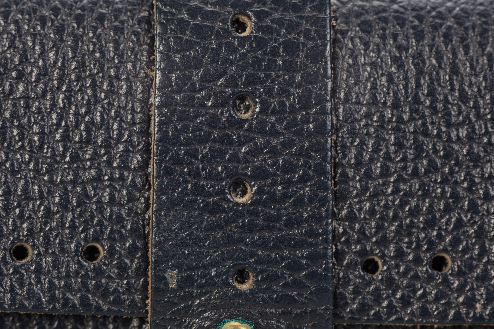
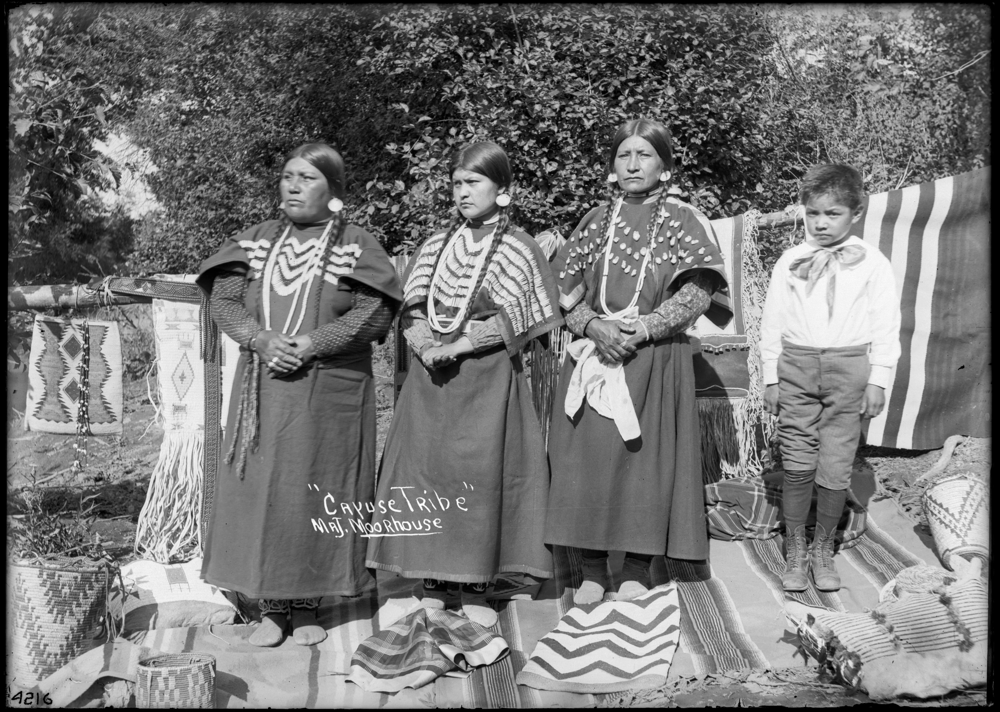
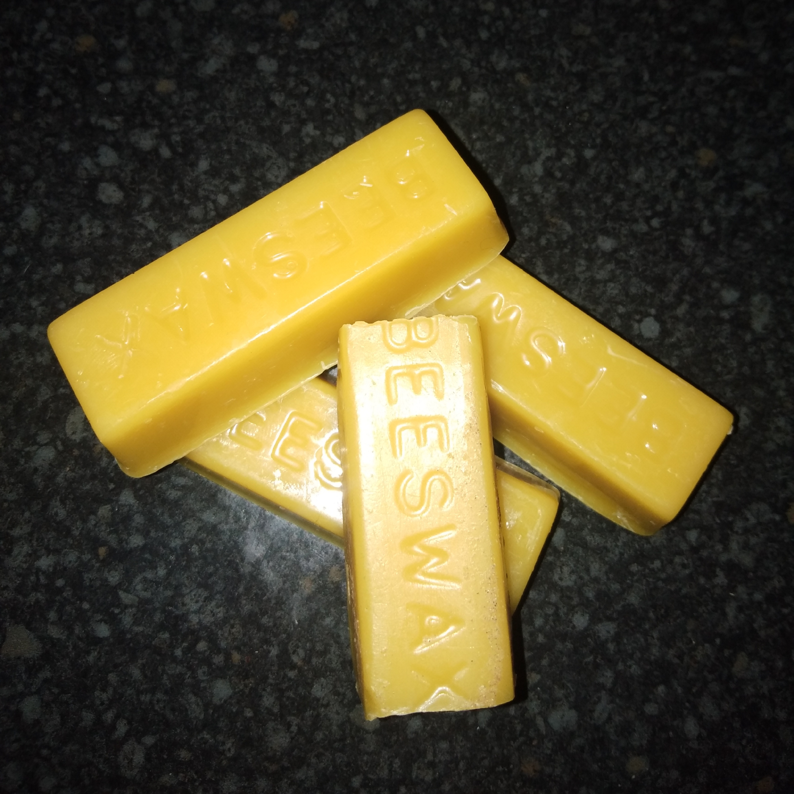
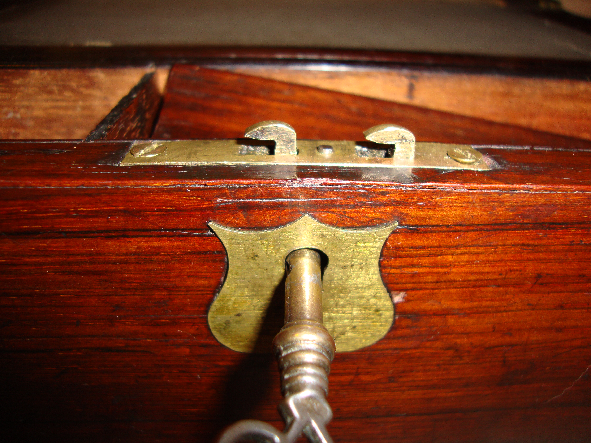

The Sovereign Luster of Shell Cordovan Clutches
Cut exclusively from the dense, non-creasing fibrous corium of the equine posterior and nurtured through six months of oak-bark pit tanning, our bespoke evening clutches deliver an indestructible, mirror-burnished heirloom patina.

The Pillars of Cordovan Maroquinerie
Unlike standard calfskin which exhibits superficial grain creasing, genuine Shell Cordovan is a membrane of pure, aligned collagen fibrils that ripples into soft, undulating rolls.

Two-Needle Saddle Stitching
Every seam is hand-perforated with French pricking irons and joined with dual needles passing simultaneously through each hole. Unlike lockstitches, a severed thread will never unravel.
Discover Craft →
Glass-Beeswax Burnishing
Cut raw edges are beveled, damp-sanded through six progressive grits, and friction-fused with pure organic beeswax using exotic cocobolo wood slickers until attaining a glass-smooth seal.
Discover Craft →
Solid Machined Brass
Hardware components are CNC-milled from solid architectural brass billets, hand-antiqued, and secured with machine screws rather than hollow rivets, ensuring multi-generational endurance.
Discover Craft →The Unique Collagen Architecture of Equine Shell
Shell Cordovan is derived exclusively from a specific subcutaneous fibro-elastic layer located beneath the hide of the equine croup. This membrane—the shell—possesses no hair follicles or grain texture; it is composed of densely packed, vertically aligned collagen microfibrils.
Because there is no loose grain to delaminate or pebble, a Cordovan clutch never develops the unsightly web of micro-wrinkles that afflicts ordinary bovine leathers. Instead, decades of handling polish the vegetable waxes deeper into the fiber core, cultivating a liquid, mirror-sheen patina unique to each patron.
Commission an Archival Evening Clutch
Private consultations for bespoke leather color selections, personalized monogram embossing, and custom dimensions are available by appointment at our New York salon.